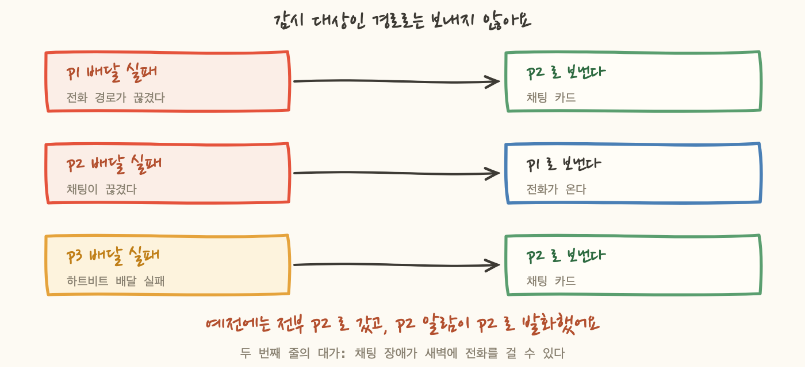
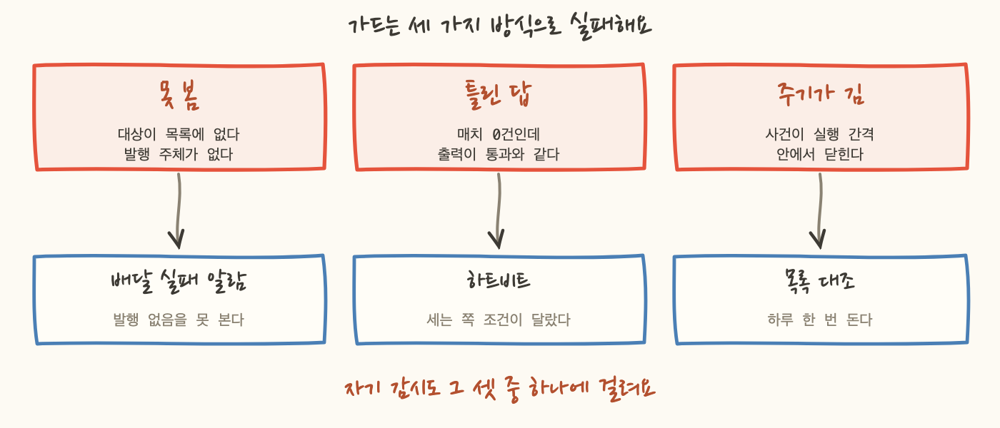

알람이 이백 개를 넘겼을 때 이런 질문이 남았어요. 이 이백 개가 지금 살아 있는지 무엇으로 아나.
답이 「Slack 에 알림이 오니까」라면 그건 답이 아닙니다. 알림이 오지 않는 상태와, 알림이 올 사건이 없는 상태가 화면에서 완전히 같게 보이니까요. 조용한 채널은 두 가지 뜻을 가지고, 둘 중 어느 쪽인지는 채널이 알려주지 않아요.
그래서 감시 체계 자신을 감시하는 층을 따로 만들었습니다. 결론부터 적으면, 그 층도 조용히 실패했어요. 이 글은 그 이야기예요.
알람은 발화하는 것만으로 일을 다 하지 않아요. 발화한 사실이 사람에게 닿아야 일이 끝납니다. 그 사이에 경로가 있고, 경로는 여러 조각으로 되어 있어요.
이 경로의 어느 조각이 죽어도 알람 쪽에서는 아무 증상이 없습니다. 알람은 자기가 발화했다는 것만 알고, 그 뒤가 어떻게 됐는지는 모르니까요. 발화 기록만 보면 정상으로 보여요.
그래서 이 항목은 우선순위 문제가 아니라 전제 문제입니다. 다른 이백 개가 전부 정확하게 걸려 있어도, 이 층이 없으면 이백 개가 동시에 아무 일도 못 하는 상태를 아무도 모를 수 있어요.
실패 메시지를 받는 큐를 왜 붙였는지와 재시도 정책을 어떻게 정했는지는 2편에서 적었어요. 여기서는 그 다음 칸을 씁니다. 그 큐의 깊이에 다시 알람을 거는 것이요. 여기에 이벤트 룰의 타깃 호출 실패 알람을 더하면 배달 실패 계열이 덮입니다.
그런데 이 알람들에는 다른 알람에 없는 문제가 하나 있습니다. 어디로 보낼 것인가.
처음에는 전부 낮은 티어로 보냈어요. 그래서 이런 상태가 됐습니다. 그 티어의 배달이 깨졌다는 사실을 알리는 알림이 같은 티어로 나갔어요. 깨진 경로로 「이 경로가 깨졌다」를 보내는 거죠. 주석에는 무한 루프를 경고하는 문장이 적혀 있었고, 아래 코드는 액션이 그대로 하드코딩돼 있었습니다.
고친 규칙은 한 줄이에요. 감시 대상인 경로로는 절대 보내지 않는다.
3편에서 티어를 「얼마나 급한가」가 아니라 「어디로 보내는가」로 정의해뒀는데, 그 정의가 여기서 값을 했어요. 예외 장치를 만들지 않고 티어 값만 바꿔도 이 규칙이 성립합니다. 티어가 급함이었다면 「p2 배달 실패는 급하지 않지만 전화로 보낸다」 같은 예외 처리를 코드에 넣어야 했을 거예요.
대가가 있습니다. 두 번째 줄은 채팅 장애가 새벽에 사람을 깨울 수 있다는 뜻이에요. 그래도 이렇게 둔 이유는 남은 선택지가 무한 루프거나 아무도 안 보는 곳뿐이었기 때문입니다. 알림 경로가 끊긴 것을 아무도 모르는 것보다는 낫다고 판단했어요.

여기까지 만들고 나서 목록을 다시 봤어요. 위의 두 장치가 잡는 것은 「배달이 실패했다」입니다. 그러면 잡히지 않는 게 뭔지 세어봤습니다.
정리하면 배달 실패를 감시하는 장치는 아무것도 오지 않는 상태를 잡지 못합니다. 오히려 그 상태에서는 두 장치가 다 초록불이에요. 실패 큐가 비어 있고 호출 실패 건수가 0이니까요.
그래서 하트비트를 붙였습니다. 15분마다 신호 하나를 로그 전용 티어로 쏘고, 그 신호가 끊긴 것을 밖에서 셉니다.
이 설계에서 핵심은 하나예요. 판단 주체가 클라우드 밖에 있다는 것. 부재를 감지하는 쪽이 외부 도구라서, 리전 하나가 통째로 죽어도 동작합니다. 발행이 멈추면 그 쪽에서 「신호가 안 온다」를 세고 전화를 걸어요.
그리고 하트비트를 만들려고 봤더니 이런 상태였습니다. 토픽과 실패 큐는 있는데 발행 주체가 없었어요. 로그 전용 티어가 문서에는 「하트비트 용도」라고 적혀 있었는데, 실제로 그 토픽에 무언가를 넣는 것이 아무것도 없었습니다. 그릇만 있고 내용이 없는 상태였죠.
여기가 이 글의 중심입니다.
하트비트는 두 조각으로 되어 있어요. 신호를 쏘는 쪽은 코드로 관리하고, 신호의 부재를 세는 쪽은 관측 도구에 손으로 만듭니다. 그쪽 프로바이더를 아직 도입하지 않았으니까요. 그래서 코드 파일 위에 이런 주석이 붙어 있습니다. 이 파일은 절반이다.
실패한 쪽은 그 나머지 절반이었어요.
발행하는 이벤트 본문에 우리가 식별용 필드를 넣었습니다. 그리고 부재를 세는 모니터의 조건도 그 필드 값으로 썼어요. 자연스러운 선택처럼 보였죠. 그런데 본문 안의 그 필드는 태그가 되지 않습니다. 수신 측은 자기가 붙이는 태그를 씁니다. 토픽 이름과 리전 같은 것들이요. 우리가 적은 필드는 그냥 본문 텍스트로만 남아요.
그래서 이 상태였습니다. 룰은 정확히 15분마다 발행하고 있었고, 부재를 세는 쪽은 아무것도 세지 않고 있었어요. 알람 이백 개가 사람에게 닿는지를 지키는 장치가, 자기가 지키려던 것과 똑같은 방식으로 고장 나 있었던 겁니다.
고친 뒤에 남은 것도 적어둘게요. 지금 모니터의 조건은 태그 하나와 본문 자유 텍스트 하나입니다. 그러니까 토픽 이름을 바꾸거나 발행 문구를 바꾸면 모니터 조건도 함께 고쳐야 해요. 그리고 그 절반은 코드 밖에 있으니 드리프트 검사가 못 봅니다. 그 사실을 코드 주석에 적어두는 것 말고는 지금 할 수 있는 게 없어요.
이 장의 결론이 이 글의 결론입니다. 감시를 감시하는 것도 틀릴 수 있어요. 그리고 틀린 방식이 특별하지 않았습니다. 5편에서 나열한 「배포됐는데 아무것도 매치하지 않는」 목록에 그대로 들어가는 사례였어요.
자기 감시의 세 번째 층입니다. 이건 알람이 아니라 스크립트예요.
배경은 이렇습니다. 「전수에 걸었다」고 적혀 있는 알람들이 실제로는 손으로 적은 리소스 목록을 봅니다. 5편의 3장에서 말한 그 상태예요. 기준은 태그인데 결과 목록은 코드 안의 리터럴이죠. 그러면 두 방향으로 어긋납니다.
이게 가설이 아니라 실제로 네 번 났어요. 사흘 사이에 세 번, 그리고 며칠 뒤에 한 번이요.
네 번째가 이 검사를 만든 계기였습니다. 앞의 셋은 사람이 조회하다가 우연히 발견한 것이고, 네 번째는 발견하는 경로가 아예 없었어요.
검사는 단순합니다. 코드의 목록을 파싱해서 계정의 실물 목록과 양방향으로 비교해요. 그런데 만들면서 결정한 것 두 개가 있습니다.
첫째, 경로를 하나로 박지 않고 여러 스택에서 모아 합집합을 만듭니다. 알람은 감시 대상을 소유한 스택으로 옮겨가니까요. 경로를 박아두면 알람을 옮긴 순간 「감시 밖」을 오탐합니다. 알람은 멀쩡히 도는데 가드만 매일 우는 상태요. 매번 우는 가드는 꺼진 가드입니다.
둘째, 실물 조회가 실패해서 빈 목록이 오면 검사 결과를 내지 않고 멈춥니다. 빈 목록으로 계산하면 코드에 적힌 전부가 「유령」이 돼요. 그건 검사 결과가 아니라 조회 실패인데, 출력만 보면 구분이 안 됩니다. 그래서 그 경우는 실패로 끝내고 조회를 확인하라고 말해요.
둘째 결정과 짝인 문제가 하나 더 있습니다. 이번엔 조회가 아니라 파싱 쪽이에요. 스크립트에 적혀 있는 문장을 그대로 옮길게요.
구조를 보면 왜 이게 가장 나쁜지 보여요. 이 검사는 코드의 목록과 실물의 차집합을 냅니다. 코드 목록이 비면 차집합 한쪽이 0이 되고, 출력은 「감시 밖 0개」예요. 그리고 그 출력은 전부 일치할 때의 출력과 똑같습니다.
그러니까 파서가 정규식 하나 어긋나서 아무것도 못 읽으면, 이 검사는 매일 초록불을 내면서 아무것도 대조하지 않아요. 3장의 실패 큐, 4장의 하트비트와 같은 모양입니다.
그래서 자기검사를 붙였습니다. 자격증명 없이 도는 검사에 넣어서 매번 돌게 했어요. 확인하는 항목이 이런 것들입니다.
마지막 항목이 재미있어요. 자기검사가 자기 자신의 탐색 범위가 비어 있지 않은지를 확인합니다. 이런 검사가 필요한 이유는 하나예요. 가드가 통과한 화면과 가드가 아무것도 안 본 화면이 같으면, 그 가드는 없는 것과 같습니다.
정직하게 남은 구멍을 적을게요. 이 대조 검사는 하루 한 번 도는 드리프트 잡에 붙어 있습니다. 계정을 읽어야 하니 자격증명 없이 도는 검사에는 넣을 수 없었어요.
그러면 주기가 사건보다 길면 못 잡습니다. 알람이 사라진 창이 몇 시간이면, 다음 실행이 오기 전에 창이 닫혀요. 실행 시점에는 코드와 실물이 다시 맞아 있으니 검사는 통과합니다. 그 사이에 일어난 일은 어디에도 안 남아요.
그리고 두 방향의 성질이 다릅니다. 유령은 흔적을 남겨요. 지표가 끊긴 알람이 계속 발화하니까 사람이 알게 됩니다. 반면 감시 밖은 흔적을 안 남깁니다. 새 리소스에 알람이 없는 상태는 그 리소스가 조용한 동안 아무것도 알려주지 않아요. 하필 그동안 사건이 나면 그때 알게 되죠.
그래서 세 층을 다 만들고 나서 남은 결론은 이렇습니다.

그럼 층을 쌓는 게 의미가 없느냐면 그렇지 않아요. 세 층이 서로 다른 방식으로 실패하니까요. 실패 큐가 못 보는 것을 하트비트가 보고, 하트비트가 놓친 목록 문제를 대조 검사가 봅니다. 셋이 같은 원인으로 동시에 죽는 경로는 줄어들어요.
다만 「자기 감시를 만들었으니 이제 안심이다」로 끝내면 안 된다는 게 이 글의 요점입니다. 자기 감시는 항목이 아니라 계속 의심해야 하는 대상이에요.